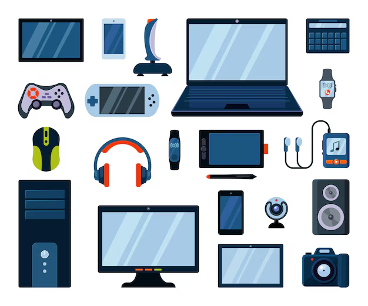
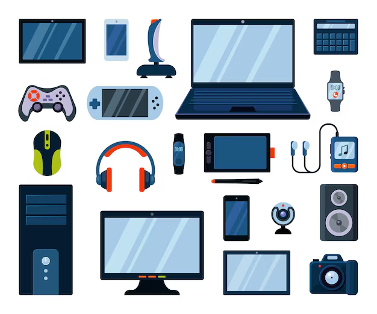

Gadgets do Presente e Futuro
De smartwatches a óculos inteligentes, veja os dispositivos que fazem parte da nossa vida hoje e no futuro.

De smartwatches a óculos inteligentes, veja os dispositivos que fazem parte da nossa vida hoje e no futuro.
